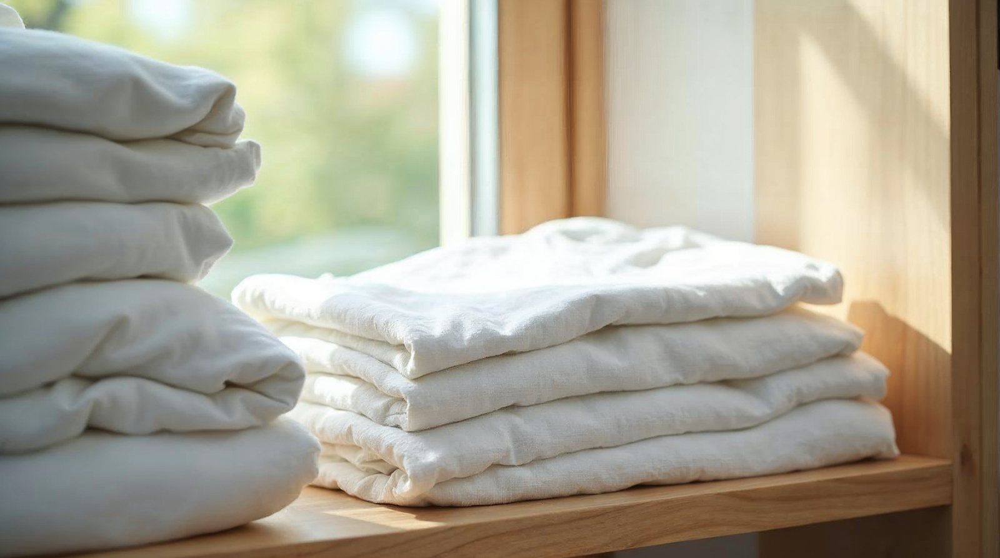

이종호 한의사 감수좋은꿈참사랑한의원 대표원장 (한의사 면허번호 19769)발행 2026-11-26 · 수정 2026-11-26
이 글의 차례
아침 출근길, 사람으로 꽉 찬 지하철 안에서 손잡이를 잡으려다 팔을 내립니다. 혹시 내 겨드랑이에서 냄새가 나지는 않을까, 옆 사람이 고개를 돌리지는 않을까. 회사에 도착하자마자 화장실로 가서 물티슈로 닦고 데오드란트를 덧바릅니다. 하루에도 몇 번씩 같은 일을 반복합니다.
몸 냄새 때문에 오시는 분들은 진료실 문을 열기까지 꽤 오래 망설이셨다고 말씀하십니다. 가족에게도 털어놓기 어렵고, 누군가 냄새 이야기를 하면 나를 두고 하는 말 같아 얼굴이 달아오른다고요. 여름에는 긴소매 옷을 입고, 사람 많은 자리는 일부러 피하게 되었다는 분도 계십니다.
이 고민은 생각보다 많은 분이 조용히 안고 계십니다. 그리고 냄새가 실제보다 크게 느껴지는 경우도, 반대로 본인은 잘 모르는데 주변에서 먼저 알아차리는 경우도 있습니다. 냄새는 내 코가 금방 익숙해지는 감각이라 스스로 가늠하기가 어렵기 때문입니다.
이 글에서는 겨드랑이와 몸 냄새가 왜 생기는지, 액취증과 다한증은 어떻게 다른지, 생활에서 냄새를 줄이는 방법과 진료실에서 함께 살피는 부분을 차근차근 정리해 보겠습니다. 부끄러운 이야기가 아니라 몸을 돌보는 이야기로 편하게 읽어 주세요. 진료실에서도 이 이야기는 다른 증상과 똑같이 차분하게 나눕니다.
땀에는 두 종류가 있습니다
우리 몸에는 성격이 다른 두 가지 땀샘이 있습니다. 하나는 온몸에 퍼져 있는 에크린 땀샘으로, 더울 때나 운동할 때 맑고 물 같은 땀을 내어 체온을 식힙니다. 이 땀은 거의 물과 소금이라 그 자체로는 냄새가 거의 없습니다.
다른 하나는 아포크린 땀샘입니다. 겨드랑이, 젖꼭지 주위, 사타구니, 귀 안쪽처럼 털이 나는 일부 자리에만 있고, 사춘기 무렵부터 활발해집니다. 이 땀은 단백질과 지방이 섞여 조금 끈적하고, 피부 위 세균이 이 성분을 분해하면서 특유의 냄새가 만들어집니다.
그래서 겨드랑이 냄새는 땀이 많아서라기보다 아포크린 땀의 성분과 피부 위 세균이 만나서 생기는 것에 가깝습니다. 땀이 많지 않은데도 냄새가 신경 쓰이는 분이 있는 이유입니다. 반대로 땀이 많아도 냄새는 거의 없는 분도 계십니다.
왜 어떤 사람은 냄새가 더 날까요
아포크린 땀샘의 크기와 활동은 타고나는 영향이 큽니다. 부모님 가운데 한 분이 액취증이 있으면 자녀도 비슷한 성향을 가질 가능성이 높다고 알려져 있습니다. 귀지가 마른 가루 모양이 아니라 축축하고 끈적한 분은 아포크린 땀샘이 활발한 편이라는 이야기도 있습니다.
타고난 성향 위에 냄새를 더 키우는 생활 요인들이 겹치기도 합니다. 진료실에서 이야기를 나눠 보면 아래와 같은 경우가 자주 겹칩니다.
- 땀이 찬 옷을 오래 입고 있거나 통풍이 안 되는 옷을 자주 입는 경우
- 겨드랑이 털이 많아 땀과 세균이 머물기 쉬운 경우
- 기름진 음식, 고기, 마늘, 술을 자주 드시는 경우
- 긴장하거나 스트레스를 받으면 땀이 확 나는 경우
- 체중이 늘어 피부가 접히는 자리가 많아진 경우
사춘기에 냄새가 시작되어 고민하는 학생도 많습니다. 이 시기에는 아포크린 땀샘이 한창 활발해지니, 씻는 습관과 옷 관리를 함께 익히는 것이 도움이 됩니다. 부모님께서는 아이가 부끄러워하지 않도록 편안하게 이야기를 꺼내 주세요.
다한증과 액취증은 무엇이 다를까요?
다한증은 땀의 양이 문제입니다. 덥지 않은데도 손바닥, 발바닥, 겨드랑이, 얼굴에서 땀이 흘러 일상이 불편할 정도로 많이 나는 상태입니다. 주로 맑은 에크린 땀이라 냄새보다 축축함과 번들거림이 고민인 경우가 많습니다.
액취증은 땀의 냄새가 문제입니다. 땀의 양이 많지 않아도 아포크린 땀이 세균과 만나 냄새가 나는 상태를 말합니다. 물론 두 가지가 함께 있는 분도 계십니다. 땀이 많으면 피부가 늘 축축해 세균이 자라기 쉬우니 냄새도 더 강해질 수 있습니다.
발 냄새는 조금 다릅니다. 발에는 아포크린 땀샘이 거의 없고, 에크린 땀이 많이 나는 자리에서 신발과 양말 속에 갇힌 땀을 세균이 분해하면서 냄새가 납니다. 그래서 발 냄새는 신발과 양말 관리가 특히 중요합니다. 발가락 사이가 하얗게 짓무르거나 가렵다면 무좀이 함께 있을 수 있어 피부과에서 확인받아 보시길 권합니다.
냄새가 실제보다 크게 느껴질 때
냄새 고민이 깊은 분들 가운데에는 주변 사람들이 별로 느끼지 못하는데 본인은 늘 냄새가 난다고 걱정하시는 경우가 있습니다. 누군가 코를 만지거나 창문을 열면 나 때문이라고 생각하게 되고, 그 걱정이 긴장을 만들어 땀이 더 나는 고리가 생기기도 합니다.
이럴 때는 믿을 수 있는 가족이나 가까운 친구에게 솔직하게 물어보는 것이 도움이 될 수 있습니다. 씻은 직후, 땀을 흘린 뒤, 하루를 마친 저녁처럼 때에 따라 냄새가 어떤지 들어 보면 내가 느끼는 것과 실제 사이의 차이를 가늠할 수 있습니다.
걱정이 너무 커서 사람 만나는 일 자체를 피하게 되었다면, 냄새만큼 그 마음도 함께 이야기해 주세요. 냄새를 줄이는 관리와 함께 긴장을 다스리는 방법을 찾는 것이 하루를 편하게 하는 데 도움이 됩니다. 냄새는 줄었는데 걱정은 그대로인 경우도 많아서, 마음의 짐을 덜어 내는 것도 관리의 한 부분으로 봅니다.
몸 냄새가 달라졌을 때 살펴볼 것
평소와 다른 냄새가 새로 생겼다면 몸의 다른 변화가 함께 있는지 살펴보는 것이 좋습니다. 단내나 과일 같은 냄새, 암모니아 같은 냄새, 비린내처럼 이전과 다른 냄새가 몸이나 입에서 느껴진다면 혈당이나 콩팥, 간 같은 몸속 상태가 영향을 주고 있을 수 있습니다.
갱년기에 열감과 땀이 늘면서 냄새가 달라졌다고 느끼는 분도 많습니다. 새로 드시기 시작한 약이 땀의 양을 늘리는 경우도 있습니다. 이런 변화가 있다면 내과에서 한 번 확인해 보시길 권하고, 드시는 약은 처방한 선생님과 상의 없이 바꾸지 않습니다.
계절과 하루 흐름에 따라 달라지는 냄새
여름에는 땀이 많아지고 옷이 오래 젖어 있어 냄새가 가장 신경 쓰이는 계절입니다. 그런데 겨울에도 두꺼운 옷과 난방 때문에 겨드랑이에 땀이 차고, 바람이 잘 통하지 않아 오히려 냄새가 옷에 배기 쉽습니다. 겨울에는 안에 입는 옷을 통기성 좋은 소재로 고르시는 것이 좋습니다.
하루 가운데에는 아침에 씻고 나온 직후가 가장 편하고, 오후로 갈수록 냄새가 신경 쓰인다는 분이 많습니다. 점심 무렵 한 번 겨드랑이를 닦고 말려 주는 것만으로도 오후가 한결 편해질 수 있습니다. 회사나 학교 가방에 작은 수건과 갈아입을 속옷을 넣어 두는 분도 계십니다.

옷과 세탁도 냄새와 가깝습니다
땀 냄새는 몸에서만 나는 것이 아니라 옷에 배어 남기도 합니다. 겨드랑이 부분이 누렇게 변한 옷은 땀 성분이 쌓여 있어, 씻고 나서 입어도 다시 냄새가 올라올 수 있습니다. 이런 옷은 겨드랑이 부분을 따로 미지근한 물에 담가 두었다가 빨아 주세요.
세탁한 옷은 바람이 잘 통하는 곳에서 충분히 말리는 것이 중요합니다. 덜 마른 옷에서는 꿉꿉한 냄새가 나고, 그 냄새가 땀 냄새와 섞여 더 강하게 느껴질 수 있습니다. 합성 섬유 옷은 냄새가 잘 배는 편이라 면이나 기능성 통기 소재가 도움이 될 수 있습니다.
먼저 이렇게 여쭙니다
처음 오시면 저는 대략 이런 순서로 여쭙니다. 미리 생각해 오시면 이야기가 훨씬 수월해집니다.
- 냄새는 언제부터 신경 쓰였나요? 겨드랑이, 발, 몸 전체 가운데 어디인가요?
- 땀은 많은 편인가요? 긴장하면 더 나나요?
- 가족 가운데 비슷한 고민이 있는 분이 계신가요?
- 하루 몇 번 씻으시고, 옷은 어떤 소재를 주로 입으시나요?
- 기름진 음식, 고기, 술은 일주일에 얼마나 드시나요?
- 최근 새로 드시는 약이나 몸의 변화가 있나요?
모든 질문에 정확히 답하지 못하셔도 괜찮습니다. 냄새가 가장 신경 쓰이는 상황 하나만 말씀해 주셔도 이야기의 실마리가 됩니다. 냄새 때문에 피하게 된 일이 있는지도 편하게 들려주세요.
일상에서 먼저 해 볼 수 있는 것
냄새 관리는 땀이 머무는 시간을 줄이고, 세균이 자랄 틈을 줄이는 것이 기본입니다. 아래 가운데 지금 쉽게 할 수 있는 것부터 시작해 보세요.
- 하루 한 번은 겨드랑이를 순한 비누로 거품 내어 씻고 충분히 말리기
- 땀을 흘린 뒤에는 젖은 수건으로 닦고 마른 수건으로 물기 없애기
- 데오드란트나 땀 억제제는 씻고 말린 피부에 바르기
- 면이나 통기성 좋은 소재의 옷 입고, 땀 찬 옷은 바로 갈아입기
- 겨드랑이 털을 짧게 다듬어 땀이 머무는 자리 줄이기
- 신발은 이틀 번갈아 신고, 양말은 하루 한 번 이상 갈아 신기
땀 억제제는 잠들기 전 마른 피부에 바르면 밤사이 땀샘 입구에 자리를 잡아 다음 날 효과를 보기 쉽다고 알려져 있습니다. 바른 자리가 따갑거나 붉어지면 쓰기를 멈추고 다른 제품을 고르시는 것이 좋습니다.
향수로 냄새를 덮으려 하면 땀 냄새와 섞여 오히려 더 강하게 느껴질 수 있습니다. 냄새를 덮기보다 씻고 말리는 쪽에 힘을 쏟으시길 권합니다. 겨드랑이를 너무 세게 문지르거나 하루에 여러 번 비누로 씻으면 피부가 상해 오히려 따갑고 붉어질 수 있으니, 씻는 것은 하루 한두 번으로 충분합니다.
식사에서는 기름지고 진한 음식, 마늘과 향신료가 많은 음식, 술을 드신 다음 날 냄새가 더 강하다는 분이 많습니다. 모두 끊으실 필요는 없지만 먹고 난 다음 날을 기록해 보시면 내 몸에 맞는 조절 방법을 찾을 수 있습니다. 채소와 물을 충분히 드시는 것도 도움이 됩니다.
한의원에서 함께 살필 수 있는 경우
- 몸에 열이 많고 조금만 움직여도 땀이 확 나는 경우
- 긴장하거나 스트레스를 받으면 땀과 냄새가 심해지는 경우
- 기름진 음식을 먹은 뒤 속이 더부룩하고 냄새가 강해지는 경우
- 입 냄새나 대변 냄새가 함께 신경 쓰이고 소화가 불편한 경우
- 냄새 걱정으로 긴장이 이어지고 잠이 얕아진 경우
좋은꿈참사랑한의원에 오시면 먼저 아래 '먼저 확인이 필요한' 신호가 없는지부터 봅니다. 그다음 맥을 짚고 땀과 열감, 소화, 대소변, 잠을 여쭈며 몸 전체의 흐름을 살펴봅니다.
진찰한 내용을 바탕으로 생활에서 바꿔 볼 것 하나와 함께 침, 한약 상담 가운데 지금 상태에 맞는 것을 정합니다. 한약을 상의할 때는 드시는 약을 모두 확인하고 신중하게 정합니다. 땀샘을 다루는 시술이나 수술이 필요해 보이면 피부과와 상의하시도록 안내합니다.
임신 중이시거나 임신을 계획하고 계시다면 진료 전에 먼저 알려 주세요. 그에 맞춰 조심스럽게 정하고, 필요하면 산부인과와 상의하시도록 안내합니다.
이렇게 기록해 오시면 상담이 쉬워집니다
냄새는 그날의 생활에 따라 달라지기 쉬워 기록이 도움이 됩니다. 2주 정도 간단히 적어 보세요.
- 냄새가 특히 신경 쓰였던 날과 상황
- 땀을 많이 흘린 날과 그 이유(더위, 운동, 긴장)
- 기름진 음식, 고기, 술을 드신 날 표시
- 씻은 횟수와 쓰신 제품
- 입은 옷의 소재
- 잠과 소화, 대변 상태
기록을 나란히 놓고 보면 냄새가 강했던 날과 생활 사이의 연결이 보이기 시작합니다. 빠진 날이 있어도 괜찮으니 편한 방법으로 이어 가 보세요. 가족에게 냄새의 정도를 0부터 10까지 숫자로 물어 함께 적어 두는 분도 계십니다.
냄새보다 사람 곁의 편안함을
몸 냄새는 누구에게나 있습니다. 다만 그 정도와 느끼는 마음이 사람마다 다를 뿐입니다. 냄새 고민이 있다고 해서 깨끗하지 않다거나 부족한 사람이라는 뜻은 결코 아닙니다.
이번 주에는 땀 찬 옷 바로 갈아입기 하나만 지켜 보세요. 다음에 오시면 2주 동안의 기록을 함께 펼쳐 보며, 사람 곁에서 조금 더 편안해질 수 있는 방법을 함께 찾아보겠습니다. 손잡이를 잡는 팔이 조금 가벼워지는 날을 함께 기다려 보겠습니다.
이런 증상은 먼저 확인이 필요합니다
- 겨드랑이나 사타구니가 뜨겁게 붓고 고름이 나오면서 열이 나는 경우
- 몸이나 입에서 단내, 과일 냄새가 나면서 갈증과 소변이 늘고 몸이 몹시 처지는 경우
이런 신호가 있으면 한의원보다 가까운 병원이나 응급실을 먼저 찾으세요.
함께 읽으면 좋은 글
- 손바닥·발바닥·겨드랑이에 땀이 너무 많은 다한증은 어떻게 살피나요?
- 땀이 많거나 적다고 하면 진료실에서 무엇을 묻나요?
- 양치를 해도 입냄새가 신경 쓰일 때, 입·코·속의 원인은 어떻게 나눠 살피나요?
- 여름에 땀이 차는 곳마다 붉은 좁쌀 같은 것이 올라올 때는 어떻게 살피나요?
여쭙는 것
- 냄새는 언제부터 신경 쓰였나요? 겨드랑이, 발, 몸 전체 가운데 어디인가요?
- 땀은 많은 편인가요? 긴장하면 더 나나요?
- 가족 가운데 비슷한 고민이 있는 분이 계신가요?
생활에서 해 볼 것
- 하루 한 번은 겨드랑이를 순한 비누로 거품 내어 씻고 충분히 말리기
- 땀을 흘린 뒤에는 젖은 수건으로 닦고 마른 수건으로 물기 없애기
- 데오드란트나 땀 억제제는 씻고 말린 피부에 바르기
한의원에서 함께 살필 것
- 몸에 열이 많고 조금만 움직여도 땀이 확 나는 경우
- 긴장하거나 스트레스를 받으면 땀과 냄새가 심해지는 경우
- 기름진 음식을 먹은 뒤 속이 더부룩하고 냄새가 강해지는 경우
먼저 확인이 필요한 신호
- 겨드랑이나 사타구니가 뜨겁게 붓고 고름이 나오면서 열이 나는 경우
- 몸이나 입에서 단내, 과일 냄새가 나면서 갈증과 소변이 늘고 몸이 몹시 처지는 경우
한눈에 보는 표
| 구분 | 핵심 |
|---|---|
| 여쭙는 것 | 냄새는 언제부터 신경 쓰였나요? 겨드랑이, 발, 몸 전체 가운데 어디인가요? 땀은 많은 편인가요? 긴장하면 더 나나요? |
| 생활에서 해 볼 것 | 하루 한 번은 겨드랑이를 순한 비누로 거품 내어 씻고 충분히 말리기 땀을 흘린 뒤에는 젖은 수건으로 닦고 마른 수건으로 물기 없애기 |
| 한의원에서 함께 살필 것 | 몸에 열이 많고 조금만 움직여도 땀이 확 나는 경우 긴장하거나 스트레스를 받으면 땀과 냄새가 심해지는 경우 |
| 먼저 확인이 필요한 신호 | 겨드랑이나 사타구니가 뜨겁게 붓고 고름이 나오면서 열이 나는 경우 몸이나 입에서 단내, 과일 냄새가 나면서 갈증과 소변이 늘고 몸이 몹시 처지는 경우 |
자주 묻는 질문
액취증은 씻지 않아서 생기나요?
그렇지 않습니다. 겨드랑이 냄새는 타고난 땀샘의 성향과 피부 위 세균이 만나 생기는 경우가 많습니다. 씻고 말리는 습관은 냄새를 줄이는 데 도움이 될 수 있습니다.
데오드란트와 땀 억제제는 무엇이 다른가요?
데오드란트는 주로 냄새를 줄이고, 땀 억제제는 땀의 양을 줄이는 쪽입니다. 땀이 많다면 땀 억제제를 잠들기 전 마른 피부에 발라 보시고, 따갑거나 붉어지면 멈추세요.
음식을 바꾸면 냄새가 줄어드나요?
기름진 음식과 술, 향이 강한 음식을 드신 다음 날 냄새가 강하다는 분이 많습니다. 먹은 날과 냄새를 함께 적어 보시면 나에게 맞는 조절 방법을 찾는 데 도움이 됩니다.
한의원에서 액취증 수술을 하나요?
땀샘을 줄이는 시술이나 수술은 한의원에서 하지 않습니다. 한의원에서는 땀과 열감, 소화, 긴장처럼 몸 전체의 흐름을 살피고, 시술 상담은 피부과와 하시도록 안내합니다.
좋은꿈참사랑한의원은 재진 때 지난번 이야기부터 이어서 여쭙니다. 진료시간과 예약은 오시는 길에서 확인하세요.
어디서 상담받을 수 있나요?
좋은꿈참사랑한의원은 서울 동작구 만양로2길 2 신성빌딩 3층·5층(서울 동작구 상도동, 7호선 상도역 3번 출구 근처)에 있습니다. 한의사 3명(이종호 대표원장, 조영기 수석진료원장, 정원영 진료원장)이 진료합니다. 진료시간은 평일 09:30~20:00(점심 13:00~14:00), 토·일·공휴일 09:30~15:00이며, 방문 전 전화로 확인을 권합니다. 예약은 네이버 예약, 카카오톡 상담, 전화 02-815-7510로 받습니다.
이 글은 일반적인 건강 정보이며 개인의 진단이나 치료를 대신하지 않습니다. 증상이 있거나 복용 중인 약이 있다면 진료를 통해 확인하세요. 치료 효과는 개인마다 다를 수 있습니다.
작성 기준: 일반적으로 알려져 있는 건강 정보를 참고해 정리했습니다(대표원장 감수). 증상 기록은 1~2주 동안 하루 1회, 비슷한 시간에 적어 오시면 지난 상태와 비교하기 쉽습니다.